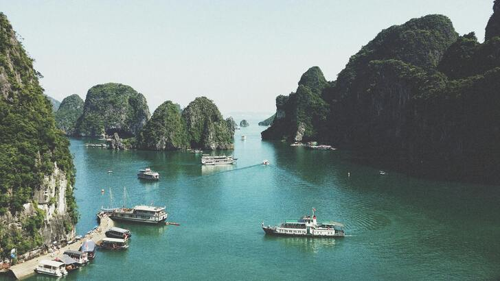

Nossa missão é proporcionar aventuras inesquecíveis com segurança e respeito pela natureza. Acreditamos que cada descida de rio é uma oportunidade para criar memórias duradouras.

White Water Rafting
Nossa História
Fundada em 2010 por entusiastas de esportes radicais, a White Water Rafting começou como um pequeno clube de amigos. Hoje, somos uma das principais operadoras de rafting da região, guiando centenas de aventureiros a cada temporada com equipamentos de ponta e guias experientes.
A Aventura te Espera!